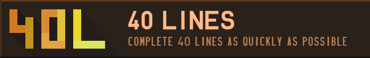
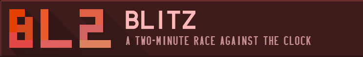
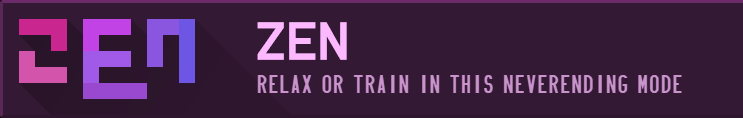
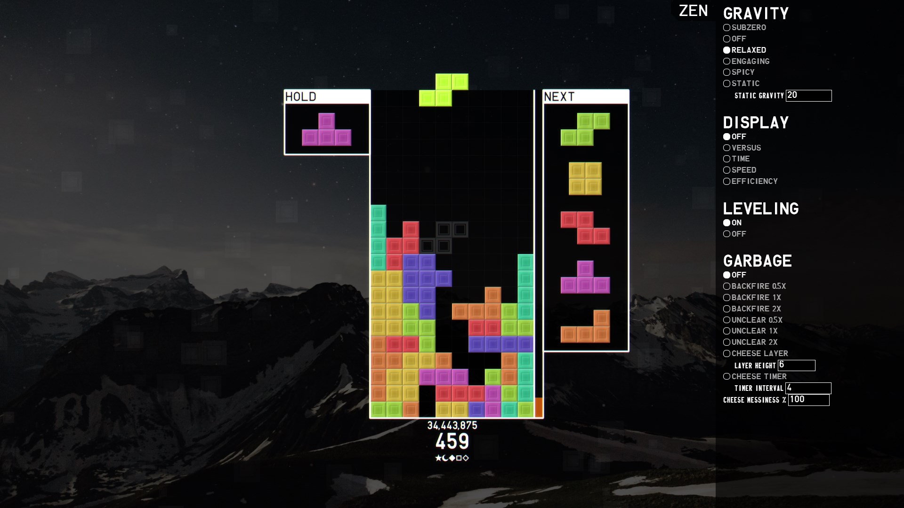

Solo Play
How do you control TETR.IO? What are the objectives of TETR.IO?
TETR.IO plays like most other modern Tetris clones, but it's still worth documenting some behaviors here.
Movement
To control pieces in TETR.IO, you can use the left and right arrow keys to move pieces left and right. If you hold one of these directional keys, after a period of delay known as DAS, the piece will automatically continue moving in that direction, in intervals known as ARR.
Try it!
DAS = 167ms, ARR = 33ms
In TETR.IO, both of these values can be customized, which can make the game very fast-paced. In fact, most of the highest-rated played play with 0ms ARR and around 100ms DAS.
To rotate pieces, you can use the Z and X keys for counterclockwise and clockwise rotation, respectively. The different rotation states are governed by the Super Rotation System made originally by the Tetris Company. TETR.IO uses a slightly modified version of this rotation system to change how I pieces (the long ones) behave.
This rotation system also governs how pieces behave when their desired rotation state is overlapped by an already existing block or wall. Each rotation has four different positions that the game will try in order when rotating. Once a suitable rotation has been found, the piece will move to that orientation. If none of the four positions are valid, then no rotation occurs. For more information, read this.
TETR.IO is also somewhat unique in that it offers the option to spin a piece 180 degrees in one move. This can be achieved using the A key, and the kicks are as follows:

Finally, the last aspect of moving is dropping pieces on to the field. There are two main ways of doing this in TETR.IO: hard drop and soft drop. The majority of the time you want to place a piece, you will use hard drop; this will just teleport the piece downward to the ground or on top of a piece. Soft drop makes the piece move downward, but when it contacts another piece or the ground below it, it will not instantly lock and allow you to continue controlling it.
Randomizer and Hold
The randomizer in TETR.IO is a 7-bag system, which means that all seven kinds of pieces are shuffled in a "bag" and then given out, guaranteeing that there will be one instance of each piece every seven pieces. It allows for a more forgiving randomizer, since the longest you can go without a given piece is 12 pieces.
However, there is still a mechanism to help you out if the randomizer gives you a piece you don't want: hold. This feature allows you to store a piece you currently control into a hold area. Then, you will control the next piece in queue, allowing you to essentially "skip" a piece.

If your hold area already contains a piece, then pressing the hold key will simply swap your current piece and the piece in the hold area. You can only do this once per piece.
Sprint
Sprint is one of the most universal modes in not just TETR.IO but Tetris as a whole. It is a competition of speed where the objective is to clear a set amount of lines as fast as possible.
In TETR.IO the only sprint mode is 40 lines, and the objective is simply to clear those 40 lines as fast as possible. Given the customizable ARR and DAS, there is technically no speed limit other than the human capacity. The current world record is 15.812 seconds, set by Hiryu.
Blitz
The point of this mode is to score the most points as possible in 2 minutes, as gravity increases greatly. It is a stressful, high-energy mode where you go all out to try and rack up as many points as possible in many different ways.
Almost everything you do will net you points, like placing pieces. The goal is to do the actions that will maximize your point gain. For example, clearing a line will net you more points than placing a block. Clearing 4 lines at once nets you even more points. Clearing every block off of the board nets you even more.
The current world record (and most other high scores) use the last strategy of doing perfect clears to earn the most points:
Zen
Zen is a training mode where you can control almost everything to practice your stacking skills. Points are still tracked, but there is no competitive leaderboard or objective.
